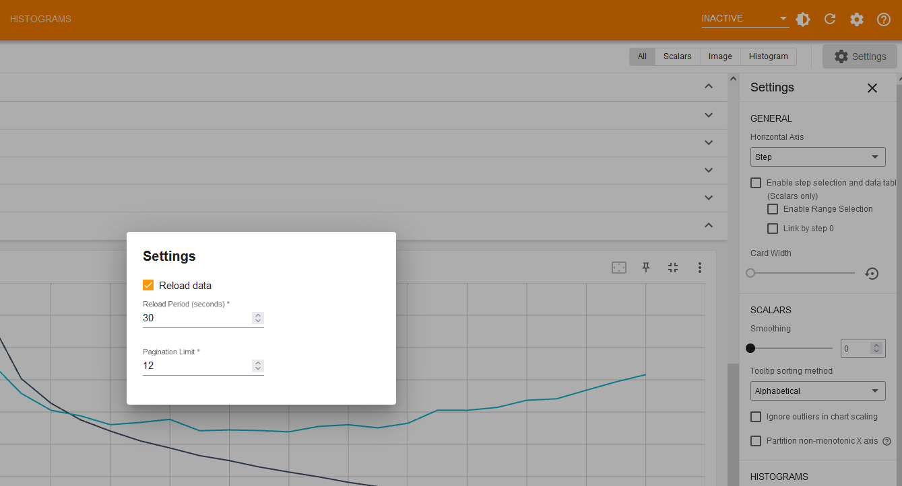
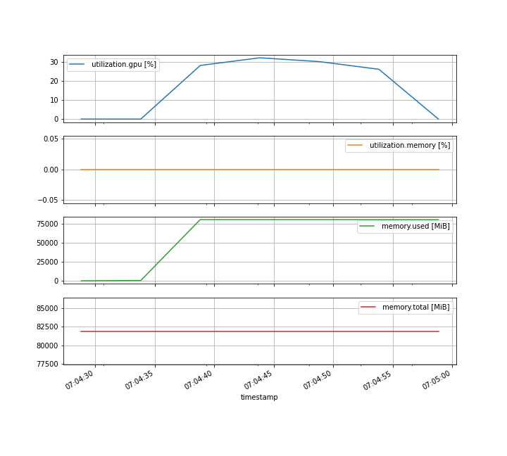

Monitoring¶
In this section, we will explore multiple ways to monitor the activity of a job while it is running.
Live log file monitoring¶
So far, we looked at the content of the log file at the end using the cat command.
Wouldn’t it be great if we could see in “real time” the content of this file?
To achieve this, we will use the tail command with a little twist 🪄.
The tail command prints by default the last lines of a file.
Let’s try this on one of our log files, for example (replace 44349268 with any of your jobs ID):
output
Epoch 2/5
1563/1563 [==============================] - 4s 3ms/step - loss: 1.1781 - accuracy: 0.5816 - val_loss: 1.1526 - val_accuracy: 0.5874
Epoch 3/5
1563/1563 [==============================] - 4s 3ms/step - loss: 1.0207 - accuracy: 0.6384 - val_loss: 1.0523 - val_accuracy: 0.6281
Epoch 4/5
1563/1563 [==============================] - 4s 3ms/step - loss: 0.9263 - accuracy: 0.6742 - val_loss: 0.9380 - val_accuracy: 0.6695
Epoch 5/5
1563/1563 [==============================] - 4s 3ms/step - loss: 0.8484 - accuracy: 0.7035 - val_loss: 0.9007 - val_accuracy: 0.6905
313/313 - 0s - loss: 0.9007 - accuracy: 0.6905 - 403ms/epoch - 1ms/step
test accuracy: 0.690500020980835
But using the -f option, the tail command will keep watching the file and print updates to the file as they happen.
Let’s run a new job to illustrate this, using one of our job scripts from the previous section:
Double check that your job is running with squeue --me:
output
And then open the log file using tail -f (replace 44392266 with your job ID):
Warning
The tail -f command will not end, even once the job has finished.
To get the command line prompt back, you need to interrupt it using Ctrl+C.
Tensorboard¶
TensorBoard is a powerful visualisation tool that let’s you track and display various metrics while a model is being trained. It’s a web application, meaning that its interface is accessible via your web browser.
To use it, you need to make sure that your code save logs in the right format.
In our example script training_model.py, this is handled by the TensorBoard callback:
tensorboard_callback = tf.keras.callbacks.TensorBoard(
log_dir=output_folder / "logs", histogram_freq=1
)
history = model.fit(
train_images,
train_labels,
epochs=5,
validation_data=(test_images, test_labels),
callbacks=[tensorboard_callback]
)
Here, we decided to save the TensorBoard logs in a sub-folder logs of the job result folder.
Before running it on a live job, let’s use it to look at the metrics from a previous job (replace 44393779_train_model_env.sl with one of your results folder):
module purge
module load TensorFlow/2.13.0-gimkl-2022a-Python-3.11.3
tensorboard --logdir 44393779_train_model_env.sl/logs/
output
2024-03-13 00:04:50.888636: I tensorflow/core/platform/cpu_feature_guard.cc:182] This TensorFlow binary is optimized to use available CPU instructions in performance-critical operations.
To enable the following instructions: AVX2 FMA, in other operations, rebuild TensorFlow with the appropriate compiler flags.
2024-03-13 00:04:53.655259: E tensorflow/compiler/xla/stream_executor/cuda/cuda_driver.cc:268] failed call to cuInit: CUDA_ERROR_UNKNOWN: unknown error
Serving TensorBoard on localhost; to expose to the network, use a proxy or pass --bind_all
TensorBoard 2.13.0 at http://localhost:6006/ (Press CTRL+C to quit)
Now TensorBoard is running locally in your session, on port 6006 (default value). But you are using a remote session, so opening http://localhost:6006/ in your browser won’t work 😢.
Fortunately, JupyterLab – the interface you are currently using to access the platform – can proxy web applications if you access it via a special proxy url:
for an application running on port PORTNUMBER.
In our case, this would be https://jupyter.nesi.org.nz/user-redirect/proxy/6006/.
Warning
The final slash / character in the url is important.
If you forget it, you will see a white empty page.
Failure
If someone else is already running an application on port 6006 on the same node as you, TensorBoard will crashe with the following message:
Address already in use
Port 6006 is in use by another program. Either identify and stop that program, or start the server with a different port.
To avoid this issue, select another port using the --port option, for example using port 25601 (replace 44393779_train_model_env.sl with one of your results folder):
and change the proxy url accordingly.
Like tail -f, the tensorboard command does not end by itself.
Press Ctrl+C to interrupt it and get the command line prompt back.
Info
To illustrate how to use TensorBoard in live mode, we need to increase the runtime of our Slurm jobs.
Edit your copy of train_model.py to increase the number of epochs from 5 to 30.
Interestingly, TensorBoard can be used while a job is running and writing information in its corresponding logs folder.
Let’s give it a try! Submit a new training job:
Then, as soon as the output folder is created, start the tensorboard command (replace 44394400_train_model_env.sl with your job result folder):
and open the proxy url https://jupyter.nesi.org.nz/user-redirect/proxy/6006/.
To enable live update in the web interface, click on the cogwheel icon (top right) and then tick the option Reload Data.

Info
Make sure to edit your copy of train_model.py to decrease the number of epochs back to 5.
GPU usage¶
Another aspect which is import to monitor is how well the GPU is used while running the training code. This can help diagnose simple errors (e.g. the code is not running on the GPU) as weel as tune some hyperparameters (e.g. increase the batch size).
Here, we will rely on nvidia-smi to collect information in a .csv file, while our job is running.
Edit one of your job submission scripts, for example:
and insert the following command at the beginning instead of nvidia-smi:
# monitor GPU usage
nvidia-smi --query-gpu=timestamp,utilization.gpu,utilization.memory,memory.used,memory.total \
--format=csv,nounits -l 5 > "gpustats-${SLURM_JOB_ID}.csv" &
train_model_env.sl (monitored)
This will make nvidia-smi output every 5 seconds (-l 5) a series of measures to a .csv file.
See also
More details about available metrics and their meaning is available in Nvidia documentation.
Then, let’s submit a job:
And, once the job finished, look at the generated .csv (replace 44409149 with your job ID):
output
timestamp, utilization.gpu [%], utilization.memory [%], memory.used [MiB], memory.total [MiB]
2024/03/13 07:04:28.836, 0, 0, 0, 81920
2024/03/13 07:04:33.838, 0, 0, 445, 81920
2024/03/13 07:04:38.839, 28, 0, 80257, 81920
2024/03/13 07:04:43.843, 32, 0, 80257, 81920
2024/03/13 07:04:48.844, 30, 0, 80257, 81920
2024/03/13 07:04:53.846, 26, 0, 80257, 81920
2024/03/13 07:04:58.849, 0, 0, 80257, 81920
This is a nice pile of number, wouldn’t be nicer to turn it into a plot 😉?
Let’s do this using a little bit of Python code. Open a new Console1 in JupyterLab and use the following commands (replace the file path with your .csv file):
import pandas as pd
statsfile = "/nesi/project/nesi99991/introhpc2403/riom/gpustats-44409149.csv"
dset = pd.read_csv(statsfile, parse_dates=True, index_col="timestamp")
dset.plot(subplots=True, figsize=(10, 9), grid=True)

-
In the File menu, under New, click on Console and then select the kernel
Python 3.10.5 (gimkl-2022a). ↩